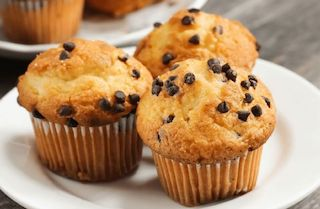
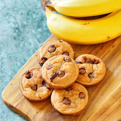
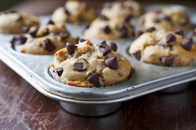

This website provides instructions for making the most tasy and healthy banana chocolate chip muffins out there. For this snack you will need the following ingredients:
Butter or Magarine
Sugar
Eggs
Bananas
Whole Wheat Flour
Nutmeg
Baking Soda
Water
Vanilla
For instructions on how to prepare these delicious muffins see the preparation section.

| Measurement | Ingredient |
|---|---|
| 1/2 Cup | Butter or Margarine |
| 1 Cup | Sugar |
| 2 | Eggs |
| 1 Cup | Mashed Ripe Bananas |
| 1 1/2 Cups | Whole Wheat Flour |
| 1/2 Cup | Semi-Sweet Chocolate Chips |
| 1 tsp | Nutmeg |
| 1 tsp | Baking Soda |
| 2 | Hot Water |
| 1 tsp | Vanilla |
Cream butter and sugar. Add eggs and bananas. Mix well.
Stir in flour and nutmeg. Dissolve baking soda in hot water, add to banana mixture. Stir in vanilla. Add chocolate chips.
Fill greased muffin tins 1/2 full.
Bake at 3500F for about 20 minutes or until golden brown.
Makes 24 medium muffins.

"By replacing regular white flour with whole wheat flour, these muffins are a great snack option for those looking to lead a healthier lifestyle"
-Kimberly Sulz